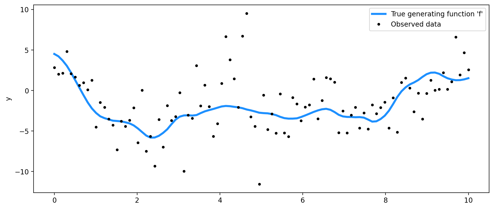
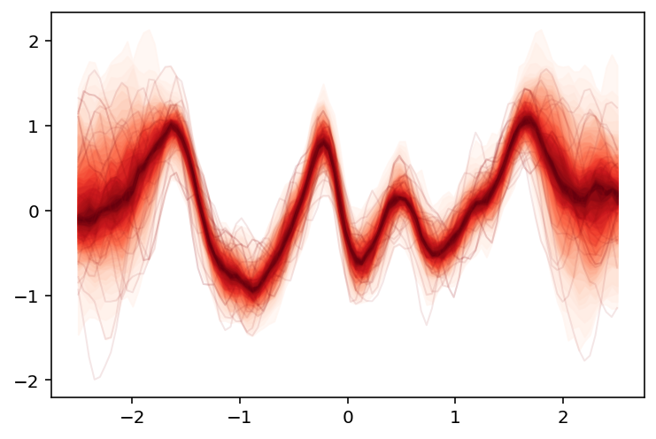
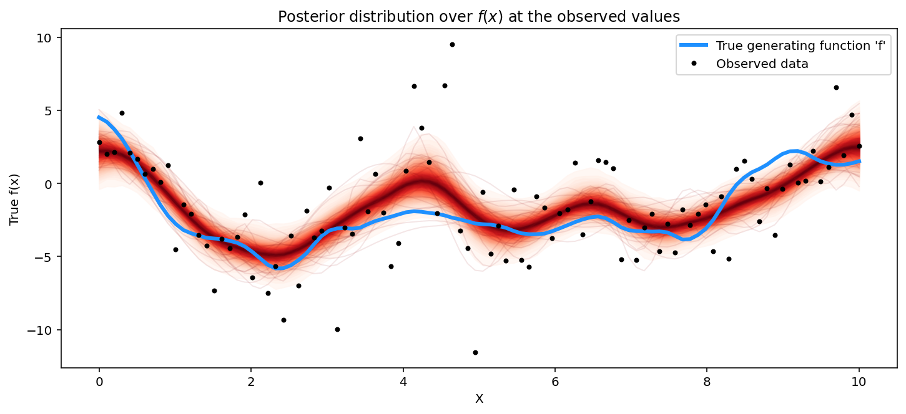
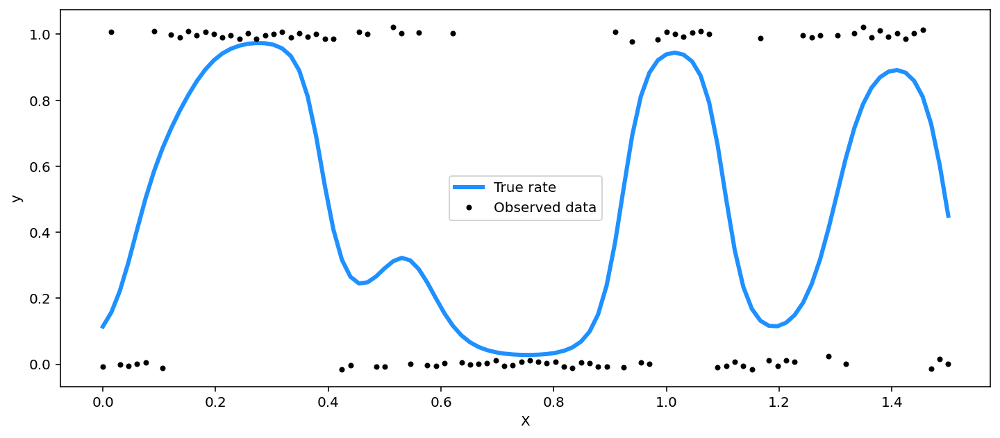
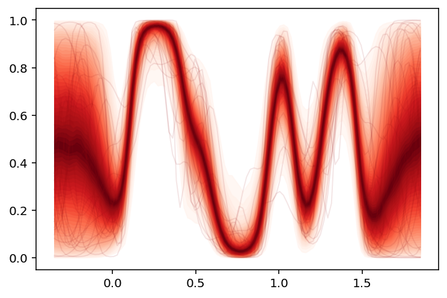
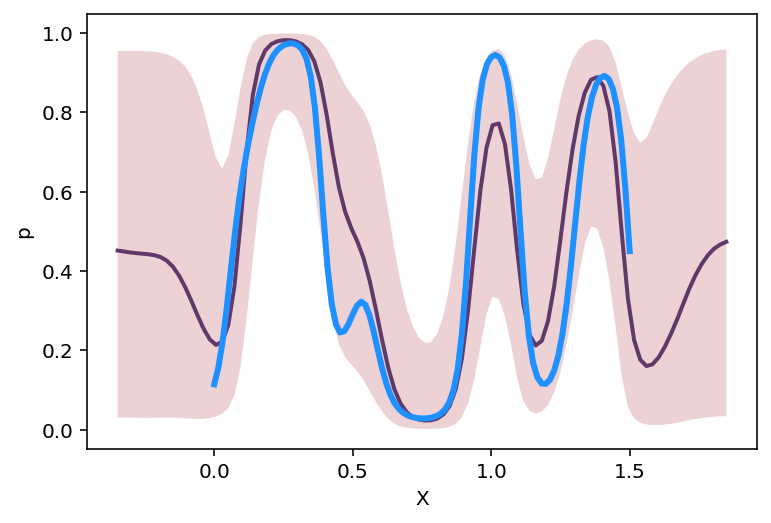
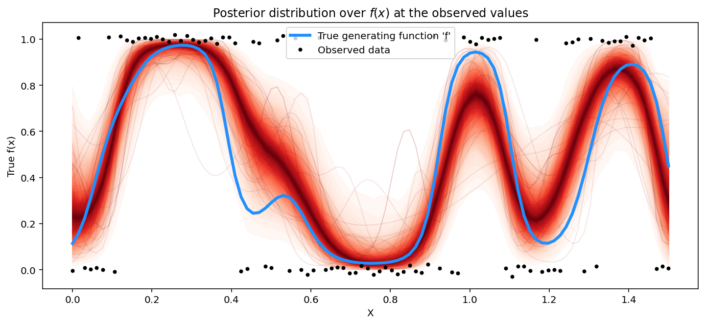

[1]:
import pymc as pm
import numpy as np
import arviz as az
import matplotlib.pyplot as plt
import pandas as pd
import gumbi as gmb
%config InlineBackend.figure_format = 'retina'
WARNING (pytensor.tensor.blas): Using NumPy C-API based implementation for BLAS functions.
Reproducible randomness
[2]:
# ss = np.random.SeedSequence()
# hex(ss.entropy)
entropy = 0x6FC3469A06C95A424BBB9CD0702832C0
base_seed = np.random.SeedSequence(entropy)
SEEDs = base_seed.spawn(2)
Student-T Process
[3]:
rng = np.random.default_rng(SEEDs[0])
n = 100 # The number of data points
X = np.linspace(0, 10, n)[
:, None
] # The inputs to the GP must be arranged as a column vector
# Define the true covariance function and its parameters
ℓ_true = 1.0
η_true = 3.0
cov_func = η_true ** 2 * pm.gp.cov.Matern52(1, ℓ_true)
# A mean function that is zero everywhere
mean_func = pm.gp.mean.Zero()
# The latent function values are one sample from a multivariate normal
# Note that we have to call `eval()` because Pymc built on top of Theano
f_true = rng.multivariate_normal(
mean_func(X).eval(), cov_func(X).eval() + 1e-8 * np.eye(n), 1
).flatten()
# The observed data is the latent function plus a small amount of T distributed noise
# The standard deviation of the noise is `sigma`, and the degrees of freedom is `nu`
σ_true = 2.0
ν_true = 3.0
y = f_true + σ_true * rng.standard_t(ν_true, size=n)
## Plot the data and the unobserved latent function
fig = plt.figure(figsize=(12, 5))
ax = fig.gca()
ax.plot(X, f_true, "dodgerblue", lw=3, label="True generating function 'f'")
ax.plot(X, y, "ok", ms=3, label="Observed data")
plt.legend()
ax.set_ylabel("y")
plt.legend()
[3]:
<matplotlib.legend.Legend at 0x7f477f5a8510>

[4]:
data = np.column_stack([X, y])
df = pd.DataFrame(data, columns=["X", "y"])
ds = gmb.DataSet(df, outputs=["y"])
ds
[4]:
DataSet:
wide: [100 rows x 2 columns]
tidy: [100 rows x 3 columns]
outputs: ['y']
inputs: ['X']
[5]:
gp = gmb.GP(ds)
gp.specify_model(continuous_dims=["X"])
gp.build_model(continuous_kernel="Matern52")
mp = gp.find_MAP()
[6]:
gp.prepare_grid()
pts = gp.grid_points.z[:, None].values()
# with gp.model:
# # X_new = pm.Data('X_new', pts)
# pred = gp.gp_dict['total'].conditional('latent_posterior', pts)
with gp.model:
pred_samples = pm.sample_posterior_predictive(
[mp], var_names=["latent_posterior", "ml"], samples=200
)
---------------------------------------------------------------------------
TypeError Traceback (most recent call last)
Cell In[6], line 9
4 # with gp.model:
5 # # X_new = pm.Data('X_new', pts)
6 # pred = gp.gp_dict['total'].conditional('latent_posterior', pts)
8 with gp.model:
----> 9 pred_samples = pm.sample_posterior_predictive(
10 [mp], var_names=["latent_posterior", "ml"], samples=200
11 )
TypeError: sample_posterior_predictive() got an unexpected keyword argument 'samples'
[ ]:
plot_gp_dist(plt.gca(), pred_samples["latent_posterior"], pts)
<AxesSubplot:>

[34]:
gp = gmb.GP(ds)
gp.specify_model(continuous_dims=["X"])
gp.build_latent(continuous_kernel="Matern52")
with gp.model:
f = gp.prior
_, obs_y = gp.get_shaped_data()
σ = pm.HalfCauchy("σ", beta=5)
ν = pm.Gamma("ν", alpha=2, beta=0.1)
y_ = pm.StudentT("y", mu=f, lam=1.0 / σ, nu=ν, observed=obs_y)
trace = pm.sample(
1000, chains=2, cores=1, return_inferencedata=True, random_seed=2022
)
Auto-assigning NUTS sampler...
Initializing NUTS using jitter+adapt_diag...
Sequential sampling (2 chains in 1 job)
NUTS: [ν, σ, latent_prior_rotated_, η_total, ℓ_total]
100.00% [2000/2000 04:07<00:00 Sampling chain 0, 8 divergences]
100.00% [2000/2000 04:16<00:00 Sampling chain 1, 6 divergences]
Sampling 2 chains for 1_000 tune and 1_000 draw iterations (2_000 + 2_000 draws total) took 504 seconds.
There were 8 divergences after tuning. Increase `target_accept` or reparameterize.
There were 14 divergences after tuning. Increase `target_accept` or reparameterize.
The number of effective samples is smaller than 25% for some parameters.
[35]:
az.summary(trace, var_names=["σ", "ν", "η_total", "ℓ_total"])
[35]:
| mean | sd | hdi_3% | hdi_97% | mcse_mean | mcse_sd | ess_bulk | ess_tail | r_hat | |
|---|---|---|---|---|---|---|---|---|---|
| σ | 0.459 | 0.112 | 0.249 | 0.657 | 0.003 | 0.002 | 1524.0 | 1437.0 | 1.00 |
| ν | 11.056 | 8.672 | 2.162 | 27.448 | 0.221 | 0.157 | 1641.0 | 1600.0 | 1.00 |
| η_total | 0.974 | 0.318 | 0.460 | 1.603 | 0.022 | 0.017 | 264.0 | 158.0 | 1.00 |
| ℓ_total | 0.426 | 0.162 | 0.136 | 0.693 | 0.008 | 0.006 | 403.0 | 541.0 | 1.01 |
[36]:
# plot the results
fig = plt.figure(figsize=(12, 5))
ax = fig.gca()
# plot the samples from the gp posterior with samples and shading
from pymc.gp.util import plot_gp_dist
predictions = gp.parray(y=trace.posterior["latent_prior"][0, :, :], stdzd=True)
plot_gp_dist(ax, predictions.values(), X)
# plot the data and the true latent function
ax.plot(X, f_true, "dodgerblue", lw=3, label="True generating function 'f'")
ax.plot(X, y, "ok", ms=3, label="Observed data")
# axis labels and title
plt.xlabel("X")
plt.ylabel("True f(x)")
plt.title("Posterior distribution over $f(x)$ at the observed values")
plt.legend()

Classification
[19]:
import sys
# reset the random seed for the new example
rng = np.random.default_rng(SEEDs[1])
# number of data points
n = 100
# x locations
X = np.linspace(0, 1.5, n)
# true covariance
ℓ_true = 0.1
η_true = 2.0
cov_func = η_true ** 2 * pm.gp.cov.ExpQuad(1, ℓ_true)
K = cov_func(X[:, None]).eval()
# zero mean function
mean = np.zeros(n)
# sample from the gp prior
f_true = rng.multivariate_normal(mean, K + 1e-6 * np.eye(n), 1).flatten()
# link function
def invlogit(x, eps=sys.float_info.epsilon):
return (1.0 + 2.0 * eps) / (1.0 + np.exp(-x)) + eps
y = rng.binomial(1, p=invlogit(f_true))
[4]:
fig = plt.figure(figsize=(12, 5))
ax = fig.gca()
ax.plot(X, invlogit(f_true), "dodgerblue", lw=3, label="True rate")
# add some noise to y to make the points in the plot more visible
ax.plot(X, y + rng.normal(size=n) * 0.01, "ko", ms=3, label="Observed data")
ax.set_xlabel("X")
ax.set_ylabel("y")
plt.legend()

[5]:
data = np.column_stack([X, y])
df = pd.DataFrame(data, columns=["X", "y"])
ds = gmb.DataSet(df, outputs=["y"], logit_vars=["p"])
del ds.stdzr["y"] # Don't standardize the binary outcome
ds
[5]:
DataSet:
wide: [100 rows x 2 columns]
tidy: [100 rows x 3 columns]
outputs: ['y']
inputs: ['X']
[6]:
gp = gmb.GPC(ds)
gp.specify_model(continuous_dims=["X"])
gp.build_model()
gp.sample(1000, chains=2, cores=1, random_seed=2022)
Auto-assigning NUTS sampler...
Initializing NUTS using jitter+adapt_diag...
Sequential sampling (2 chains in 1 job)
NUTS: [latent_prior_rotated_, η_total, ℓ_total]
100.00% [2000/2000 01:57<00:00 Sampling chain 0, 0 divergences]
100.00% [2000/2000 01:44<00:00 Sampling chain 1, 0 divergences]
Sampling 2 chains for 1_000 tune and 1_000 draw iterations (2_000 + 2_000 draws total) took 222 seconds.
The estimated number of effective samples is smaller than 200 for some parameters.
[6]:
arviz.InferenceData
-
- chain: 2
- draw: 1000
- latent_prior_rotated__dim_0: 100
- latent_prior_dim_0: 100
- p_dim_0: 100
- chain(chain)int640 1
array([0, 1])
- draw(draw)int640 1 2 3 4 5 ... 995 996 997 998 999
array([ 0, 1, 2, ..., 997, 998, 999])
- latent_prior_rotated__dim_0(latent_prior_rotated__dim_0)int640 1 2 3 4 5 6 ... 94 95 96 97 98 99
array([ 0, 1, 2, 3, 4, 5, 6, 7, 8, 9, 10, 11, 12, 13, 14, 15, 16, 17, 18, 19, 20, 21, 22, 23, 24, 25, 26, 27, 28, 29, 30, 31, 32, 33, 34, 35, 36, 37, 38, 39, 40, 41, 42, 43, 44, 45, 46, 47, 48, 49, 50, 51, 52, 53, 54, 55, 56, 57, 58, 59, 60, 61, 62, 63, 64, 65, 66, 67, 68, 69, 70, 71, 72, 73, 74, 75, 76, 77, 78, 79, 80, 81, 82, 83, 84, 85, 86, 87, 88, 89, 90, 91, 92, 93, 94, 95, 96, 97, 98, 99]) - latent_prior_dim_0(latent_prior_dim_0)int640 1 2 3 4 5 6 ... 94 95 96 97 98 99
array([ 0, 1, 2, 3, 4, 5, 6, 7, 8, 9, 10, 11, 12, 13, 14, 15, 16, 17, 18, 19, 20, 21, 22, 23, 24, 25, 26, 27, 28, 29, 30, 31, 32, 33, 34, 35, 36, 37, 38, 39, 40, 41, 42, 43, 44, 45, 46, 47, 48, 49, 50, 51, 52, 53, 54, 55, 56, 57, 58, 59, 60, 61, 62, 63, 64, 65, 66, 67, 68, 69, 70, 71, 72, 73, 74, 75, 76, 77, 78, 79, 80, 81, 82, 83, 84, 85, 86, 87, 88, 89, 90, 91, 92, 93, 94, 95, 96, 97, 98, 99]) - p_dim_0(p_dim_0)int640 1 2 3 4 5 6 ... 94 95 96 97 98 99
array([ 0, 1, 2, 3, 4, 5, 6, 7, 8, 9, 10, 11, 12, 13, 14, 15, 16, 17, 18, 19, 20, 21, 22, 23, 24, 25, 26, 27, 28, 29, 30, 31, 32, 33, 34, 35, 36, 37, 38, 39, 40, 41, 42, 43, 44, 45, 46, 47, 48, 49, 50, 51, 52, 53, 54, 55, 56, 57, 58, 59, 60, 61, 62, 63, 64, 65, 66, 67, 68, 69, 70, 71, 72, 73, 74, 75, 76, 77, 78, 79, 80, 81, 82, 83, 84, 85, 86, 87, 88, 89, 90, 91, 92, 93, 94, 95, 96, 97, 98, 99])
- latent_prior_rotated_(chain, draw, latent_prior_rotated__dim_0)float64-0.7459 0.1713 ... -2.283 0.2097
array([[[-0.74586256, 0.171344 , 2.06742052, ..., -0.4106746 , 0.09680656, -0.35206391], [-0.90760626, 0.90125617, 2.03023049, ..., -2.05390617, -0.17243638, -0.09802263], [-1.11150788, 2.39297337, 0.341691 , ..., 0.11681029, 0.20895296, 0.46446234], ..., [-0.50204037, -1.11913147, 1.75987477, ..., -0.56584023, 0.89503051, -0.32834452], [ 0.61772017, -1.8692355 , 0.75467937, ..., 1.12712941, 0.00701502, 0.65903091], [ 0.34805213, -2.30612481, -0.21695311, ..., 0.27747897, -1.35978214, 0.70178085]], [[-0.52901505, -1.23695103, 1.69716791, ..., -1.66944072, -1.48223707, 0.2693234 ], [-0.06986232, -0.78812821, 1.76981222, ..., -1.36488711, -1.64899117, 1.37876565], [-0.07862374, -1.23614789, 2.05090002, ..., -0.95505442, -1.52891695, 1.62673055], ..., [-0.74313953, 1.00873188, 0.42397921, ..., -0.38941297, 1.64700665, -0.31341027], [-0.8438761 , 0.68269539, 0.94862822, ..., -0.27644873, 1.71936873, -1.13882903], [-0.13558842, 0.03769137, 0.97532914, ..., -0.54481362, -2.28319152, 0.2097085 ]]]) - ℓ_total(chain, draw)float640.348 0.3628 ... 0.3088 0.3159
array([[0.34799372, 0.36279257, 0.47078044, ..., 0.17633913, 0.12494262, 0.12470526], [0.24096575, 0.22875263, 0.22123082, ..., 0.31229578, 0.30879691, 0.3158865 ]]) - η_total(chain, draw)float642.204 1.888 2.785 ... 1.522 2.053
array([[2.20446157, 1.88763863, 2.78452524, ..., 1.59971957, 2.22495392, 2.78648931], [2.01902666, 2.56437214, 2.74749103, ..., 1.48559098, 1.52231588, 2.05348183]]) - latent_prior(chain, draw, latent_prior_dim_0)float64-1.644 -1.599 ... -0.07664 -0.346
array([[[-1.64422551, -1.59885627, -1.47538739, ..., 1.07776921, 0.79204574, 0.52548973], [-1.71323287, -1.54424001, -1.31409091, ..., 0.25750306, 0.17023445, 0.10455607], [-3.09502195, -2.59951227, -2.08557547, ..., 2.69670107, 2.59584711, 2.4492879 ], ..., [-0.80312396, -1.13456351, -1.26352425, ..., -0.75133027, -1.14028857, -1.39890073], [ 1.37439905, 0.19719299, -0.73710209, ..., -1.20063306, -2.32343928, -2.92016989], [ 0.96984359, -0.80929106, -2.46084192, ..., -0.87133987, -1.35046677, -1.49035154]], [[-1.06809562, -1.41265537, -1.62401838, ..., -1.6848245 , -2.29039535, -2.78744026], [-0.17915301, -0.47995033, -0.6199339 , ..., 0.01159858, -0.86607021, -1.65110463], [-0.21601805, -0.73938441, -1.04253042, ..., -1.16003387, -2.18435177, -3.09972156], ..., [-1.10400163, -0.93239203, -0.74082161, ..., 0.4781189 , 0.12640684, -0.2429227 ], [-1.28464627, -1.16101553, -0.99928127, ..., -0.44091406, -0.73638854, -1.04920154], [-0.27842838, -0.26835492, -0.22172486, ..., 0.16909535, -0.07663603, -0.34600077]]]) - p(chain, draw, p_dim_0)float640.1619 0.1681 ... 0.4809 0.4144
array([[[0.16189092, 0.16814153, 0.18612514, ..., 0.74607159, 0.68827042, 0.62843055], [0.15274487, 0.17591975, 0.21180309, ..., 0.56402239, 0.54245613, 0.52611523], [0.04331306, 0.06916982, 0.11050674, ..., 0.9368317 , 0.93059383, 0.92050936], ..., [0.30935767, 0.24331991, 0.22036781, ..., 0.32053151, 0.24226738, 0.19799061], [0.79808996, 0.54913912, 0.32363816, ..., 0.23136262, 0.08920024, 0.05116545], [0.72508832, 0.30804159, 0.07864931, ..., 0.29497558, 0.20579407, 0.18386897]], [[0.25576541, 0.19581557, 0.16465143, ..., 0.15645768, 0.09192154, 0.05800667], [0.45533116, 0.38226385, 0.34979648, ..., 0.50289961, 0.29607267, 0.16095971], [0.44620452, 0.32313877, 0.26066204, ..., 0.23866113, 0.10116453, 0.04311874], ..., [0.24899086, 0.28243968, 0.32282451, ..., 0.61730358, 0.5315597 , 0.43956622], [0.21676036, 0.23848281, 0.26908276, ..., 0.39152319, 0.32379437, 0.25937846], [0.43083912, 0.433311 , 0.44479477, ..., 0.5421734 , 0.48085036, 0.41435256]]])
- created_at :
- 2022-02-16T11:21:31.480160
- arviz_version :
- 0.11.2
- inference_library :
- pymc
- inference_library_version :
- 3.11.4
- sampling_time :
- 222.3747525215149
- tuning_steps :
- 1000
<xarray.Dataset> Dimensions: (chain: 2, draw: 1000, latent_prior_rotated__dim_0: 100, latent_prior_dim_0: 100, p_dim_0: 100) Coordinates: * chain (chain) int64 0 1 * draw (draw) int64 0 1 2 3 4 ... 995 996 997 998 999 * latent_prior_rotated__dim_0 (latent_prior_rotated__dim_0) int64 0 1 ... 99 * latent_prior_dim_0 (latent_prior_dim_0) int64 0 1 2 3 ... 97 98 99 * p_dim_0 (p_dim_0) int64 0 1 2 3 4 5 ... 95 96 97 98 99 Data variables: latent_prior_rotated_ (chain, draw, latent_prior_rotated__dim_0) float64 ... ℓ_total (chain, draw) float64 0.348 0.3628 ... 0.3159 η_total (chain, draw) float64 2.204 1.888 ... 2.053 latent_prior (chain, draw, latent_prior_dim_0) float64 -1... p (chain, draw, p_dim_0) float64 0.1619 ... 0.... Attributes: created_at: 2022-02-16T11:21:31.480160 arviz_version: 0.11.2 inference_library: pymc inference_library_version: 3.11.4 sampling_time: 222.3747525215149 tuning_steps: 1000xarray.Dataset -
- chain: 2
- draw: 1000
- y_dim_0: 100
- chain(chain)int640 1
array([0, 1])
- draw(draw)int640 1 2 3 4 5 ... 995 996 997 998 999
array([ 0, 1, 2, ..., 997, 998, 999])
- y_dim_0(y_dim_0)int640 1 2 3 4 5 6 ... 94 95 96 97 98 99
array([ 0, 1, 2, 3, 4, 5, 6, 7, 8, 9, 10, 11, 12, 13, 14, 15, 16, 17, 18, 19, 20, 21, 22, 23, 24, 25, 26, 27, 28, 29, 30, 31, 32, 33, 34, 35, 36, 37, 38, 39, 40, 41, 42, 43, 44, 45, 46, 47, 48, 49, 50, 51, 52, 53, 54, 55, 56, 57, 58, 59, 60, 61, 62, 63, 64, 65, 66, 67, 68, 69, 70, 71, 72, 73, 74, 75, 76, 77, 78, 79, 80, 81, 82, 83, 84, 85, 86, 87, 88, 89, 90, 91, 92, 93, 94, 95, 96, 97, 98, 99])
- y(chain, draw, y_dim_0)float64-0.1766 -1.783 ... -0.6556 -0.535
array([[[-0.17660702, -1.78294922, -0.20594866, ..., -1.37070292, -1.16561921, -0.99001949], [-0.16575341, -1.73772737, -0.23800734, ..., -0.83016439, -0.78188251, -0.74679109], [-0.04427907, -2.67119069, -0.11710334, ..., -2.7619527 , -2.66777948, -2.53211601], ..., [-0.3701332 , -1.41337822, -0.24893302, ..., -0.38644442, -0.2774247 , -0.22063496], [-1.59993301, -0.59940347, -0.39102708, ..., -0.26313597, -0.09343221, -0.05252084], [-1.2913054 , -1.17752048, -0.08191454, ..., -0.34952284, -0.23041249, -0.20318036]], [[-0.29539899, -1.63058202, -0.17990619, ..., -0.17014521, -0.0964245 , -0.05975708], [-0.6075773 , -0.96164419, -0.43046986, ..., -0.69896328, -0.35108015, -0.17549655], [-0.59095983, -1.12967341, -0.30200014, ..., -0.27267673, -0.10665528, -0.04407597], ..., [-0.28633746, -1.26429029, -0.38982482, ..., -0.96051325, -0.75834661, -0.57904419], [-0.24431658, -1.43345806, -0.31345504, ..., -0.49679647, -0.39125807, -0.30026552], [-0.56359215, -0.83629956, -0.58841744, ..., -0.78126476, -0.65556312, -0.53503731]]])
- created_at :
- 2022-02-16T11:21:34.087805
- arviz_version :
- 0.11.2
- inference_library :
- pymc
- inference_library_version :
- 3.11.4
<xarray.Dataset> Dimensions: (chain: 2, draw: 1000, y_dim_0: 100) Coordinates: * chain (chain) int64 0 1 * draw (draw) int64 0 1 2 3 4 5 6 7 8 ... 992 993 994 995 996 997 998 999 * y_dim_0 (y_dim_0) int64 0 1 2 3 4 5 6 7 8 9 ... 91 92 93 94 95 96 97 98 99 Data variables: y (chain, draw, y_dim_0) float64 -0.1766 -1.783 ... -0.6556 -0.535 Attributes: created_at: 2022-02-16T11:21:34.087805 arviz_version: 0.11.2 inference_library: pymc inference_library_version: 3.11.4xarray.Dataset -
- chain: 2
- draw: 1000
- chain(chain)int640 1
array([0, 1])
- draw(draw)int640 1 2 3 4 5 ... 995 996 997 998 999
array([ 0, 1, 2, ..., 997, 998, 999])
- tree_depth(chain, draw)int644 4 4 4 4 4 4 4 ... 4 4 4 4 4 4 4 4
array([[4, 4, 4, ..., 4, 4, 4], [4, 4, 4, ..., 4, 4, 4]]) - diverging(chain, draw)boolFalse False False ... False False
array([[False, False, False, ..., False, False, False], [False, False, False, ..., False, False, False]]) - step_size_bar(chain, draw)float640.2341 0.2341 ... 0.2417 0.2417
array([[0.23406708, 0.23406708, 0.23406708, ..., 0.23406708, 0.23406708, 0.23406708], [0.24166464, 0.24166464, 0.24166464, ..., 0.24166464, 0.24166464, 0.24166464]]) - max_energy_error(chain, draw)float641.602 2.314 ... -1.259 1.242
array([[ 1.6024211 , 2.31382914, -0.88841573, ..., -0.71363312, -0.52544979, 0.61138189], [-0.55480232, 1.38888217, -1.19004951, ..., 2.90440742, -1.25889265, 1.24196679]]) - step_size(chain, draw)float640.2427 0.2427 ... 0.2161 0.2161
array([[0.24272517, 0.24272517, 0.24272517, ..., 0.24272517, 0.24272517, 0.24272517], [0.21611209, 0.21611209, 0.21611209, ..., 0.21611209, 0.21611209, 0.21611209]]) - energy_error(chain, draw)float64-0.1631 0.3483 ... -0.7515 -0.6914
array([[-0.16312831, 0.34829273, -0.00929192, ..., -0.04447875, -0.14166153, -0.32770757], [-0.55480232, 0.03112947, -0.65855055, ..., 0.59448166, -0.7514552 , -0.6913709 ]]) - process_time_diff(chain, draw)float640.25 0.1562 ... 0.2344 0.1875
array([[0.25 , 0.15625 , 0.328125, ..., 0.15625 , 0.328125, 0.171875], [0.171875, 0.171875, 0.1875 , ..., 0.171875, 0.234375, 0.1875 ]]) - lp(chain, draw)float64-196.3 -192.4 ... -198.3 -187.4
array([[-196.2591081 , -192.40493046, -197.32347511, ..., -183.96152267, -178.48631458, -180.65450518], [-200.7076438 , -196.95705433, -193.00270198, ..., -205.46480331, -198.3166976 , -187.35698873]]) - perf_counter_start(chain, draw)float641.815e+05 1.815e+05 ... 1.816e+05
array([[181500.3848109, 181500.4243083, 181500.4639496, ..., 181540.4878949, 181540.5263469, 181540.5661419], [181604.7639533, 181604.8014136, 181604.84139 , ..., 181645.4028882, 181645.4450903, 181645.4884005]]) - energy(chain, draw)float64254.9 250.7 244.4 ... 250.7 247.4
array([[254.87089057, 250.65183198, 244.38158972, ..., 230.99953048, 226.83858987, 224.00062028], [263.35923838, 252.2819805 , 243.0710407 , ..., 256.17702487, 250.66609532, 247.38254611]]) - perf_counter_diff(chain, draw)float640.03584 0.03847 ... 0.04157 0.03821
array([[0.0358377, 0.0384726, 0.0366903, ..., 0.0370422, 0.0360951, 0.0401307], [0.0362562, 0.0358698, 0.0386257, ..., 0.0382715, 0.0415719, 0.0382057]]) - acceptance_rate(chain, draw)float640.9549 0.7763 ... 0.9893 0.8087
array([[0.95487005, 0.77630455, 0.94724717, ..., 0.96084073, 0.95058915, 0.9343718 ], [0.99895215, 0.86881887, 0.95612132, ..., 0.72889882, 0.98934661, 0.80870664]]) - n_steps(chain, draw)float6415.0 15.0 15.0 ... 15.0 15.0 15.0
array([[15., 15., 15., ..., 15., 15., 15.], [15., 15., 15., ..., 15., 15., 15.]])
- created_at :
- 2022-02-16T11:21:31.495740
- arviz_version :
- 0.11.2
- inference_library :
- pymc
- inference_library_version :
- 3.11.4
- sampling_time :
- 222.3747525215149
- tuning_steps :
- 1000
<xarray.Dataset> Dimensions: (chain: 2, draw: 1000) Coordinates: * chain (chain) int64 0 1 * draw (draw) int64 0 1 2 3 4 5 6 ... 994 995 996 997 998 999 Data variables: (12/13) tree_depth (chain, draw) int64 4 4 4 4 4 4 4 4 ... 4 4 4 4 4 4 4 4 diverging (chain, draw) bool False False False ... False False step_size_bar (chain, draw) float64 0.2341 0.2341 ... 0.2417 0.2417 max_energy_error (chain, draw) float64 1.602 2.314 ... -1.259 1.242 step_size (chain, draw) float64 0.2427 0.2427 ... 0.2161 0.2161 energy_error (chain, draw) float64 -0.1631 0.3483 ... -0.7515 -0.6914 ... ... lp (chain, draw) float64 -196.3 -192.4 ... -198.3 -187.4 perf_counter_start (chain, draw) float64 1.815e+05 1.815e+05 ... 1.816e+05 energy (chain, draw) float64 254.9 250.7 244.4 ... 250.7 247.4 perf_counter_diff (chain, draw) float64 0.03584 0.03847 ... 0.03821 acceptance_rate (chain, draw) float64 0.9549 0.7763 ... 0.9893 0.8087 n_steps (chain, draw) float64 15.0 15.0 15.0 ... 15.0 15.0 15.0 Attributes: created_at: 2022-02-16T11:21:31.495740 arviz_version: 0.11.2 inference_library: pymc inference_library_version: 3.11.4 sampling_time: 222.3747525215149 tuning_steps: 1000xarray.Dataset -
- y_dim_0: 100
- y_dim_0(y_dim_0)int640 1 2 3 4 5 6 ... 94 95 96 97 98 99
array([ 0, 1, 2, 3, 4, 5, 6, 7, 8, 9, 10, 11, 12, 13, 14, 15, 16, 17, 18, 19, 20, 21, 22, 23, 24, 25, 26, 27, 28, 29, 30, 31, 32, 33, 34, 35, 36, 37, 38, 39, 40, 41, 42, 43, 44, 45, 46, 47, 48, 49, 50, 51, 52, 53, 54, 55, 56, 57, 58, 59, 60, 61, 62, 63, 64, 65, 66, 67, 68, 69, 70, 71, 72, 73, 74, 75, 76, 77, 78, 79, 80, 81, 82, 83, 84, 85, 86, 87, 88, 89, 90, 91, 92, 93, 94, 95, 96, 97, 98, 99])
- y(y_dim_0)float640.0 1.0 0.0 0.0 ... 1.0 0.0 0.0 0.0
array([0., 1., 0., 0., 0., 0., 1., 0., 1., 1., 1., 1., 1., 1., 1., 1., 1., 1., 1., 1., 1., 1., 1., 1., 1., 1., 1., 1., 0., 0., 1., 1., 0., 0., 1., 1., 0., 1., 0., 0., 0., 1., 0., 0., 0., 0., 0., 0., 0., 0., 0., 0., 0., 0., 0., 0., 0., 0., 0., 0., 1., 0., 1., 0., 0., 1., 1., 1., 1., 1., 1., 1., 0., 0., 0., 0., 0., 1., 0., 0., 0., 0., 1., 1., 1., 0., 1., 0., 1., 1., 1., 1., 1., 1., 1., 1., 1., 0., 0., 0.])
- created_at :
- 2022-02-16T11:21:34.090487
- arviz_version :
- 0.11.2
- inference_library :
- pymc
- inference_library_version :
- 3.11.4
<xarray.Dataset> Dimensions: (y_dim_0: 100) Coordinates: * y_dim_0 (y_dim_0) int64 0 1 2 3 4 5 6 7 8 9 ... 91 92 93 94 95 96 97 98 99 Data variables: y (y_dim_0) float64 0.0 1.0 0.0 0.0 0.0 0.0 ... 1.0 1.0 0.0 0.0 0.0 Attributes: created_at: 2022-02-16T11:21:34.090487 arviz_version: 0.11.2 inference_library: pymc inference_library_version: 3.11.4xarray.Dataset
[7]:
gp.prepare_grid()
gp.draw_grid_samples()
100.00% [2000/2000 00:26<00:00]
[7]:
('posterior_samples',): [[(0.55469215,) (0.50382259,) (0.45640388,) ... (0.81062671,)
(0.81870234,) (0.82129104,)]
[(0.48852792,) (0.48801392,) (0.49322148,) ... (0.2614539 ,)
(0.25195545,) (0.23634298,)]
[(0.03527021,) (0.02398699,) (0.01611803,) ... (0.56565647,)
(0.63767145,) (0.7088195 ,)]
...
[(0.3975044 ,) (0.34827322,) (0.29641576,) ... (0.29205791,)
(0.36137722,) (0.43184387,)]
[(0.33563255,) (0.31801058,) (0.28976002,) ... (0.74681145,)
(0.7499288 ,) (0.74244176,)]
[(0.54958189,) (0.49061389,) (0.45775745,) ... (0.0646207 ,)
(0.087374 ,) (0.12244907,)]]
[10]:
# plot the samples from the gp posterior with samples and shading
from pymc.gp.util import plot_gp_dist
plot_gp_dist(plt.gca(), gp.predictions.values(), gp.predictions_X.values())
[10]:
<AxesSubplot:>

[20]:
p_X = gp.predictions_X
p = gp.uparray(
"p",
μ=gp.predictions.t.values().mean(0),
σ2=gp.predictions.t.values().std(0),
stdzd=True,
)
"p",
μ=gp.predictions.t.values().mean(0),
σ2=gp.predictions.t.values().std(0),
stdzd=True,
)
pp = gmb.ParrayPlotter(p_X, p)
pp.plot()
plt.plot(X, invlogit(f_true), "dodgerblue", lw=3, label="True generating function 'f'")
[20]:
[<matplotlib.lines.Line2D at 0x7f375382f280>]

[32]:
gp = gmb.GP(ds)
gp.specify_model(continuous_dims=["X"])
gp.build_latent(eps=1e-6)
with gp.model:
f = gp.prior
_, obs_y = gp.get_shaped_data()
# logit link and Bernoulli likelihood
p = pm.Deterministic("p", pm.math.invlogit(f))
y_ = pm.Bernoulli("y", p=p, observed=obs_y)
trace = pm.sample(
1000, chains=2, cores=1, return_inferencedata=True, random_seed=2022
)
# mp = pm.find_MAP()
Auto-assigning NUTS sampler...
Initializing NUTS using jitter+adapt_diag...
Sequential sampling (2 chains in 1 job)
NUTS: [latent_prior_rotated_, η_total, ℓ_total]
100.00% [2000/2000 01:20<00:00 Sampling chain 0, 0 divergences]
100.00% [2000/2000 01:27<00:00 Sampling chain 1, 0 divergences]
Sampling 2 chains for 1_000 tune and 1_000 draw iterations (2_000 + 2_000 draws total) took 168 seconds.
The estimated number of effective samples is smaller than 200 for some parameters.
[7]:
# plot the results
fig = plt.figure(figsize=(12, 5))
ax = fig.gca()
# plot the samples from the gp posterior with samples and shading
from pymc.gp.util import plot_gp_dist
p_pred = gp.parray(p=trace.posterior["p"][0, :, :])
plot_gp_dist(ax, p_pred.values(), X)
# plot the data and the true latent function
ax.plot(X, invlogit(f_true), "dodgerblue", lw=3, label="True generating function 'f'")
ax.plot(X, y + rng.normal(size=n) * 0.01, "ok", ms=3, label="Observed data")
# axis labels and title
plt.xlabel("X")
plt.ylabel("True f(x)")
plt.title("Posterior distribution over $f(x)$ at the observed values")
plt.legend()

[ ]: